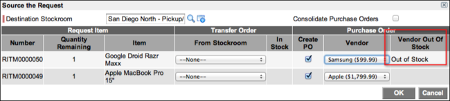
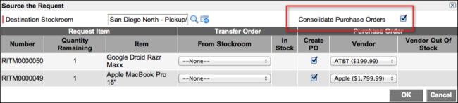

Sourcing Request Items
| |
Note: This article applies to Fuji and earlier releases. For more current information, see Request Items Source at http://docs.servicenow.com
The ServiceNow Wiki is no longer being updated. Visit http://docs.servicenow.com for the latest product documentation. |
Contents
1 Overview
A request from the service catalog can contain multiple items that need to be obtained or sourced. There are two methods of sourcing an item:
- Items in a stockroom can be transferred to a different stockroom.
- Items not in a stockroom can be ordered, with a purchase order, and delivered to a specific stockroom.
Although this page presents separate procedures for creating a transfer order and a purchase order from a request, both procedures may be used for a single request. For example, on a request that contains four items to source, two items are available to transfer from a stockroom and two must be purchased from vendors. Users with an appropriate Procurement role can perform the actions described on this page.
Only items with an assigned model can be sourced. Sourcing bundles is not supported.
2 Creating a Transfer Order from a Request
You can create a transfer order directly from a request to source items from stockrooms.
When an item is sourced with a transfer order, ServiceNow automatically looks for an existing transfer order to which the new order can be added. When transfer orders are combined, items can be received more quickly and efficiently. Transfer orders created in the Procurement application are not merged or combined with transfer orders created from other applications, like Work Management.
For a new request to merge with an existing transfer order, the existing transfer order must have the following characteristics:
- Created in the Procurement application
- Has the state set to Draft
- Has the same Type value as the new request (configure the transfer order record to add the Type field)
- Has the same From Stockroom value as the new request
- Has the same Destination Stockroom value as the new request
To create a transfer order from a request:
- Navigate to Procurement > Requests > Requests.
- Click the request Number of a request that has been approved but not sourced. (Check the Request State and Sourced columns.)
- In the Catalog Tasks related list, click a Number.
- Click Source Request.
- In Destination Stockroom, select the stockroom to which the requested item or items should be delivered.
- In From Stockroom for each item, select a stockroom from which the item should be sourced.
- Click OK.
- A transfer order is created to move the item or items from the From Stockroom location to the Destination Stockroom location. For more information, see Transfer Orders.
{kind=link}
3 Creating a Purchase Order from a Request
You can create a purchase order directly from a request. This enables procurement managers to obtain items and fulfill requests from the service catalog.
To create a purchase order from a request:
- Navigate to Procurement > Requests > Requests.
- Click the Number of a request that has been approved but not sourced. (Check the Request State and Sourced columns.)
- In the Catalog Tasks related list, click a Number.
- Click Source Request.
- In Destination Stockroom, select the stockroom to which the requested item or items should be delivered.
- Select the Create PO check box for each item that needs to be purchased.
- If the product is available from a single vendor, the vendor name is added to the Vendor field automatically. If the item is available from multiple vendors, a choice list appears in the Vendor field. Select a vendor from the list. If the selected vendor does not have the item, the Vendor Out of Stock field shows Out of Stock. (This can be configured in the Out of Stock option on the Vendor Catalog Item form.)
- 
- All items sourced from the same vendor on the same request are placed on the same purchase order. When a vendor is selected, the system automatically searches for purchase orders that have been created for the same request, have the same Vendor selected, and have the Requested status. If the system finds a match, all items are placed on the same purchase order and can be ordered together. If the system does not find a match, a new purchase order is created.
- [Optional] Select the Consolidate Purchase Orders check box to combine the listed items with existing purchase orders.
- Purchase orders are automatically searched and if one for a matching vendor exists that has not been ordered, items are added to the existing purchase order. For example, if you are purchasing 25 phones from Apple and an open purchase order already exists for Apple, the 25 phones are added to the open purchase order. If there are no open purchase orders for the selected vendors, new purchase orders are created. Items ordered from the same vendor are grouped together. Different items are shown on separate lines on the purchase order.
- 
- Click OK.
{kind=link}
{kind=link}